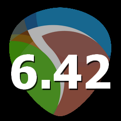

^

 GFX_DrawEmbossedSquare
GFX_DrawEmbossedSquare
Lua: boolean retval = ultraschall.GFX_DrawEmbossedSquare(integer x, integer y, integer w, integer h, optional integer rgb, optional integer gbg, optional integer bbg, optional integer r, optional integer g, optional integer b)
draws an embossed rectangle, optionally with a background-color
returns false in case of an error
Returnvalues:
| boolean retval |
| true, drawing was successful; false, drawing wasn't successful |
Parameters:
| integer x |
| the x position of the rectangle |
| integer y |
| the y position of the rectangle |
| integer w |
| the width of the rectangle |
| integer h |
| the height of the rectangle |
| optional integer rgb |
| the red-color of the background-rectangle; set to nil for no background-color |
| optional integer gbg |
| the green-color of the background-rectangle; set to nil for no background-color/uses rbg if gbg and bbg are set to nil |
| optional integer bbg |
| the blue-color of the background-rectangle; set to nil for no background-color/uses rbg if gbg and bbg are set to nil |
| optional integer r |
| the red-color of the embossed-rectangle; nil, to use 1 |
| optional integer g |
| the green-color of the embossed-rectangle; nil, to use 1 |
| optional integer b |
| the blue-color of the embossed-rectangle; nil, to use 1 |
^
 GFX_DrawThickRoundRect
GFX_DrawThickRoundRect
Lua: boolean retval = ultraschall.GFX_DrawThickRoundRect(integer x, integer y, integer w, integer h, number thickness, number roundness, boolean antialias)
draws a round-rectangle with a custom thickness.
You shouldn't redraw with it too often, as it eats many ressources
returns false in case of an error
Returnvalues:
| boolean retval |
| true, drawing was successful; false, drawing wasn't successful |
Parameters:
| integer x |
| the x position of the rectangle |
| integer y |
| the y position of the rectangle |
| integer w |
| the width of the rectangle |
| integer h |
| the height of the rectangle |
| number thickness |
| the thickness of the rectangle's edges |
| number roundness |
| the angle of the rectangle's corners |
| boolean antialias |
| true, draw antialiased; false, simply draw aliased |
^
GFX_BlitFramebuffer
Lua: boolean retval = ultraschall.GFX_BlitFramebuffer(integer framebufferidx, optional boolean showidx)
blits a framebuffer at position 0,0. If the gfx-window is smaller than the contents of the framebuffer, it will resize it before blitting to window size, retaining the correct aspect-ratio.
Mostly intended for debugging-purposes, when you want to track, if a certain framebuffer contains, what you expect it to contain.
returns false in case of an error
Returnvalues:
| boolean retval |
| true, drawing was successful; false, drawing wasn't successful |
Parameters:
| integer framebufferidx |
| the indexnumber of the framebuffer to blit; 0 to 1023; -1 is the displaying framebuffer |
| optional boolean showidx |
| true, displays the id-number of the framebuffer in the top-left corner; false, does not display framebuffer-idx |
^
 GFX_BlitImageCentered
GFX_BlitImageCentered
Lua: boolean retval = ultraschall.GFX_BlitImageCentered(integer image, integer x, integer y, number scale, number rotate, optional number srcx, optional number srcy, optional number srcw, optional number srch, optional integer destx, optional integer desty, optional integer destw, optional integer desth, optional integer rotxoffs, optional integer rotyoffs)
Blits a centered image at the position given by parameter x and y. That means, the center of the image will be at x and y.
All the rest basically works like the regular gfx.blit-function.
returns false in case of an error
Returnvalues:
| boolean retval |
| true, blitting was successful; false, blitting was unsuccessful |
Parameters:
| integer source |
| the source-image/framebuffer to blit; -1 to 1023; -1 for the currently displayed framebuffer. |
| integer x |
| the x-position of the center of the image |
| integer y |
| the y-position of the center of the image |
| number scale |
the scale-factor; 1, for normal size; smaller or bigger than 1 make image smaller or bigger
has no effect, when destx, desty, destw, desth are given |
| number rotation |
| the rotation-factor; 0 to 6.28; 3.14 for 180 degrees. |
| optional number srcx |
| the x-coordinate-offset in the source-image |
| optional number srcy |
| the y-coordinate-offset in the source-image |
| optional number srcw |
| the width-offset in the source-image |
| optional number srch |
| the height-offset in the source-image |
| optional integer destx |
| the x-coordinate of the blitting destination |
| optional integer desty |
| the y-coordinate of the blitting destination |
| optional integer destw |
| the width of the blitting destination; may lead to stretched images |
| optional integer desth |
| the height of the blitting destination; may lead to stretched images |
| optional number rotxoffs |
| influences rotation |
| optional number rotyoffs |
| influences rotation |
^
 GFX_GetTextLayout
GFX_GetTextLayout
Lua: integer font_layout = ultraschall.GFX_GetTextLayout(optional boolean bold, optional boolean italic, optional boolean underline, optional boolean outline, optional boolean nonaliased, optional boolean inverse, optional boolean rotate, optional boolean rotate2)
Returns a font_layout-value that can be used for the parameter flags for the function gfx.drawstr.
Note: as per limitation of Reaper, you can only have up to 4 font_layout-parameters at the same time.
Some combinations do not work together, so you need to experiment.
Returnvalues:
| integer font_layout |
| the returned value you can use for gfx.drawstr for its flags-parameter |
Parameters:
| optional boolean bold |
| true, sets the font_layout to bold; false, no boldness |
| optional boolean italic |
| true, sets the font_layout to italic; false, no italic |
| optional boolean underline |
| true, sets the font_layout to underline; false, no underlining |
| optional boolean outline |
| true, sets the font_layout to outline; false, no outline |
| optional boolean nonaliased |
| true, sets the font_layout to aliased; false, keep it antialiased |
| optional boolean inverse |
| true, sets the font_layout to inverse; false, not inversed |
| optional boolean rotate |
| true, sets the font_layout to rotate the font clockwise; false, don't rotate |
| optional boolean rotate2 |
| true, sets the font_layout to rotate the font counterclockwise; false, don't rotate |
^
 GFX_ResizeImageKeepAspectRatio
GFX_ResizeImageKeepAspectRatio
Lua: boolean retval = ultraschall.GFX_ResizeImageKeepAspectRatio(integer image, integer neww, integer newh, optional number r, optional number g, optional number b)
Resizes an image, keeping its aspect-ratio. You can set a background-color for non rectangular-images.
Resizing upwards will probably cause artifacts!
Note: this uses image 1023 as temporary buffer so don't use image 1023, when using this function!
Returnvalues:
| boolean retval |
| true, blitting was successful; false, blitting was unsuccessful |
Parameters:
| integer image |
| an image between 0 and 1022, that you want to resize |
| integer neww |
| the new width of the image |
| integer newh |
| the new height of the image |
| optional number r |
| the red-value of the background-color |
| optional number g |
| the green-value of the background-color |
| optional number b |
| the blue-value of the background-color |
^
 GFX_SetFont
GFX_SetFont
Lua: ultraschall.GFX_SetFont(integer fontindex, string font, integer size, string flagStr)
Sets the font of the gfx-window.
As Mac and Windows have different visible font-sizes for the same font-size, this function adapts the font-size correctly(unlike Reaper's own native gfx.setfont-function).
returns false in case of an error
Parameters:
| integer fontindex |
| the font-id; idx=0 for default bitmapped font, no configuration is possible for this font. idx=1..16 for a configurable font |
| string font |
| the name of the font |
| integer size |
| the size of the font |
| string flagStr |
a string, which holds the desired font-styles. You can combine multiple ones, up to 4.
The following are valid:
B - bold
i - italic
o - white outline
r - blurred
s - sharpen
u - underline
v - inverse |
^

 GFX_GetChar
GFX_GetChar
Lua: integer first_typed_character, integer num_characters, table character_queue = ultraschall.GFX_GetChar(optional integer character, optional boolean manage_clipboard, optional string to_clipboard, optional boolean readable_characters)
gets all characters from the keyboard-queue of gfx.getchar as a handy table.
the returned table character_queue is of the following format:
character_queue[index]["Code"] - the character-code
character_queue[index]["Ansi"] - the character-code converted into Ansi
character_queue[index]["UTF8"] - the character-code converted into UTF8
When readable_characters=true, the entries of the character_queue for Ansi and UTF8 will hold readable strings for non-printable characters, like:
"ins ", "del ", "home", "F1 "-"F12 ", "tab ", "esc ", "pgup", "pgdn", "up ", "down", "left", "rght", "bspc", "ente"
You can optionally let this function manage clipboard. So hitting Ctrl+V will get put the content of the clipboard into the character_queue of Ansi/UTF8 in the specific position of the character-queue,
while hitting Ctrl+C will put the contents of the parameter to_clipboard into the clipboard in this case.
Retval first_typed_character behaves basically like the returned character of Reaper's native function gfx.getchar()
returns -2 in case of an error
Returnvalues:
| integer first_typed_character |
| the character-code of the first character found |
| integer num_characters |
| the number of characters in the queue |
| table character_queue |
| the characters in the queue, within a table(see description for more details) |
Parameters:
| optional integer character |
a specific character-code to check for(will ignore all other keys)
65536 queries special flags, like: &1 (supported in this script), &2=window has focus, &4=window is visible |
| optional boolean manage_clipboard |
true, when user hits ctrl+v/cmd+v the character-queue will hold clipboard-contents in this position
false, treat ctrl+v/cmd+v as regular typed character |
| optional string to_clipboard |
| if get_paste_from_clipboard=true and user hits ctrl+c/cmd+c, the contents of this variable will be put into the clipboard |
| optional boolean readable_characters |
| true, make non-printable characters readable; false, keep them in original state |
^
GFX_GetMouseCap
Lua: string clickstate, string specific_clickstate, integer mouse_cap, integer click_x, integer click_y, integer drag_x, integer drag_y, integer mouse_wheel, integer mouse_hwheel = ultraschall.GFX_GetMouseCap(optional integer doubleclick_wait, optional integer drag_wait)
Checks clickstates and mouseclick/wheel-behavior, since last time calling this function and returns their states.
Allows you to get click, doubleclick, dragging, including the appropriate coordinates and mousewheel-states.
Much more convenient, than fiddling around with gfx.mouse_cap
Note: After doubleclicked, this will not return mouse-clicked-states, until the mouse-button is released. So any mouse-clicks during that can be only gotten from the retval mouse_cap.
This is to prevent automatic mouse-dragging after double-clicks.
Returnvalues:
| string clickstate |
| "", if not clicked, "CLK" for clicked and "FirstCLK", if the click is a first-click. |
| string specific_clickstate |
| either "" for not clicked, "CLK" for clicked, "DBLCLK" for doubleclick or "DRAG" for dragging |
| integer mouse_cap |
the mouse_cap, a bitfield of mouse and keyboard modifier states
1: left mouse button
2: right mouse button
4: Control key
8: Shift key
16: Alt key
32: Windows key
64: middle mouse button |
| integer click_x |
| the x position, when the mouse has been clicked the last time |
| integer click_y |
| the y position, when the mouse has been clicked the last time |
| integer drag_x |
| the x-position of the mouse-dragging-coordinate; is like click_x for non-dragging mousestates |
| integer drag_y |
| the y-position of the mouse-dragging-coordinate; is like click_y for non-dragging mousestates |
| integer mouse_wheel |
| the mouse_wheel-delta, since the last time calling this function |
| integer mouse_hwheel |
| the mouse_horizontal-wheel-delta, since the last time calling this function |
Parameters:
| optional integer doubleclick_wait |
| the timeframe, in which a second click is recognized as double-click, in defer-cycles. 30 is approximately 1 second; nil, will use 15(default) |
| optional integer drag_wait |
| the timeframe, after which a mouseclick without moving the mouse is recognized as dragging, in defer-cycles. 30 is approximately 1 second; nil, will use 5(default) |
^
GFX_BlitText_AdaptLineLength
Lua: boolean retval = ultraschall.GFX_ResizeImageKeepAspectRatio(string text, integer x, integer y, integer width, optional integer height, optional integer align)
This draws text to x and y and adapts the line-lengths to fit into width and height.
Returnvalues:
| boolean retval |
| true, text-blitting was successful; false, text-blitting was unsuccessful |
Parameters:
| string text |
| the text to be shown |
| integer x |
| the x-position of the text |
| integer y |
| the y-position of the text |
| integer width |
| the maximum width of a line in pixels; text after this will be put into the next line |
| optional integer height |
| the maximum height the text shall be shown in pixels; everything after this will be truncated |
| optional integer align |
| 0 or nil, left aligned text; 1, center text |
^
 Lokasenna_LoadGuiLib_v2
Lokasenna_LoadGuiLib_v2
Lua: ultraschall.Lokasenna_LoadGuiLib_v2()
loads Lokasenna's Gui Lib v2 into the current script, so you can make your own guis.
This prevents the need to use dofile, require, loadfile to load Lokasenna's Gui Lib, so you can code the actual Gui right after calling this function.
It gives you access to all classes immediately.
It uses a version of Lokasenna's Gui Lib v2 included with Ultraschall-API, so it doesn't get into conflict with other installed versions on your system.
You can find the documentation for it
at this location.
^
GFX_GetDropFile
Lua: boolean changed, integer num_dropped_files, array dropped_files, integer drop_mouseposition_x, integer drop_mouseposition_y = ultraschall.GFX_GetDropFile()
returns the files drag'n'dropped into a gfx-window, including the mouseposition within the gfx-window, where the files have been dropped.
if changed==true, then the filelist is updated, otherwise this function returns the last dropped files again.
Note: when the same files will be dropped, changed==true will also be dropped with only the mouse-position updated.
That way, dropping the same files in differen places is recognised by this function.
Call repeatedly in every defer-cycle to get the latest files and coordinates.
Important: Don't use Reaper's own gfx.dropfile while using this, as this could intefere with this function.
Returnvalues:
| boolean changed |
| true, new files have been dropped since last time calling this function; false, no new files have been dropped |
| integer num_dropped_files |
| the number of dropped files; -1, if no files have beend dropped at all |
| array dropped_files |
| an array with all filenames+path of the dropped files |
| integer drop_mouseposition_x |
| the x-mouseposition within the gfx-window, where the files have been dropped; -10000, if no files have been dropped yet |
| integer drop_mouseposition_y |
| the y-mouseposition within the gfx-window, where the files have been dropped; -10000, if no files have been dropped yet |
^
GFX_GetWindowHWND
Lua: HWND hwnd = ultraschall.GFX_GetWindowHWND()
Returns the HWND of the currently opened gfx-window. You need to use ultraschall.GFX_Init(), otherwise
it will contain the message "Please, use ultraschall.GFX_Init() for window-creation, not gfx.init(!), to retrieve the HWND of the gfx-window."
Returnvalues:
| HWND hwnd |
| the window-handler of the opened gfx-window; will contain a helpermessage, if you didn't use ultraschall.GFX_Init() for window creation. |
^
 GFX_Init
GFX_Init
Lua: integer retval, HWND hwnd = ultraschall.GFX_Init(string "name", optional integer width, optional integer height, optional integer dockstate, optional integer xpos, optional integer ypos)
Opens a new graphics window and returns its HWND-windowhandler object.
Returnvalues:
| number retval |
| 1.0, if window is opened |
| HWND hwnd |
| the window-handler of the newly created window; can be used with JS_Window_xxx-functions of the JS-extension-plugin |
Parameters:
| string "name" |
| the name of the window, which will be shown in the title of the window |
| optional integer width |
| the width of the window; minmum is 50 |
| optional integer height |
| the height of the window; minimum is 16 |
| optional integer dockstate |
| &1=0, undocked; &1=1, docked |
| optional integer xpos |
| x-position of the window in pixels; minimum is -80; nil, to center it horizontally |
| optional integer ypos |
| y-position of the window in pixels; minimum is -15; nil, to center it vertically |
| | | Automatically generated by Ultraschall-API 4.9 - 14 elements available
|